Analyse asymptotique
Relations de comparaison (petit-o, équivalents) pour les suites et les fonctions, puis développements limités (Taylor, opérations, applications). Cours de L. Graissot — ECAM AM2, 2026-2027.
1. Résumé de cours détaillé
1.1 Relation de négligeabilité \(o\) — cas des suites
1.2 Relation d'équivalence — cas des suites
1.3 Cas des fonctions
1.4 Quelques remarques et notions importantes
2. Développements limités
2.1 Formule de Taylor avec reste intégral
2.2 Formule de Taylor-Young
| DL usuel en 0 (\(x\to0\)) |
|---|
| \(e^x=1+x+\dfrac{x^2}{2!}+\cdots+\dfrac{x^n}{n!}+o(x^n)\) |
| \(\operatorname{ch}x=1+\dfrac{x^2}{2!}+\dfrac{x^4}{4!}+\cdots+\dfrac{x^{2n}}{(2n)!}+o(x^{2n+1})\) |
| \(\operatorname{sh}x=x+\dfrac{x^3}{3!}+\cdots+\dfrac{x^{2n+1}}{(2n+1)!}+o(x^{2n+2})\) |
| \(\cos x=1-\dfrac{x^2}{2!}+\cdots+(-1)^n\dfrac{x^{2n}}{(2n)!}+o(x^{2n+1})\) |
| \(\sin x=x-\dfrac{x^3}{3!}+\cdots+(-1)^n\dfrac{x^{2n+1}}{(2n+1)!}+o(x^{2n+2})\) |
| \(\dfrac1{1-x}=1+x+x^2+\cdots+x^n+o(x^n)\), \(\quad\dfrac1{1+x}=1-x+x^2-\cdots+(-1)^nx^n+o(x^n)\) |
| \(\ln(1+x)=x-\dfrac{x^2}2+\dfrac{x^3}3-\cdots+(-1)^{n-1}\dfrac{x^n}n+o(x^n)\) |
| \((1+x)^\alpha=1+\alpha x+\dfrac{\alpha(\alpha-1)}{2!}x^2+\cdots+\dfrac{\alpha(\alpha-1)\cdots(\alpha-n+1)}{n!}x^n+o(x^n)\) |
| \(\sqrt{1+x}=1+\dfrac x2-\dfrac{x^2}8+\cdots+(-1)^{n-1}\dfrac{1\cdot3\cdots(2n-3)}{2^nn!}x^n+o(x^n)\) |
| \(\tan x=x+\dfrac{x^3}3+\dfrac2{15}x^5+o(x^5)\), \(\arctan x=x-\dfrac{x^3}3+\dfrac{x^5}5-\cdots+\dfrac{(-1)^n}{2n+1}x^{2n+1}+o(x^{2n+1})\) |
2.3 DL en un point quelconque
2.4 Opérations sur les DL
2.5 Applications des DL
2. Exercices d'entraînement (créés)
Résolution
Étape 1 : choisir l'ordre du développement
Le dénominateur est en \(x^4\) : on développe numérateur à l'ordre 4.
Étape 2 : DL de \(\cos x\)
Étape 3 : DL de \(\sqrt{1 - x^2}\)
On pose \(u = -x^2\) :
\[ \sqrt{1 - x^2} = 1 - \frac{x^2}{2} - \frac{x^4}{8} + o(x^4) \]Étape 4 : différence
\[ \cos x - \sqrt{1 - x^2} = \left(\frac{1}{24} + \frac{1}{8}\right)x^4 + o(x^4) = \frac{4}{24}\,x^4 + o(x^4) = \frac{x^4}{6} + o(x^4) \]Résolution
Étape 1 : DL de \(f\)
D'après l'exercice 8.1 du TD :
\[ f(x) = 1 + x - \frac{x^3}{3} + o(x^3) \]Donc \(c_0 = 1\), \(c_1 = 1\), \(c_2 = 0\), \(c_3 = -\dfrac13 \neq 0\).
Étape 2 : tangente
La tangente en 0 est \(y = 1 + x\).
Étape 3 : position
3. Correction du TD n°1 — Analyse asymptotique
TD officiel (L. Graissot, ECAM AM2, 2026-2027). Les exercices 1 à 15 sont corrigés intégralement ci-dessous (énoncé en image au-dessus de chaque exercice).
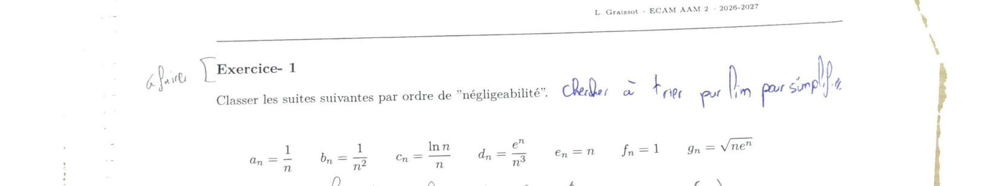
Classement par ordre de négligeabilité
Étape 1 : la méthode
On compare les suites deux à deux par leur quotient.
Étape 2 : les comparaisons
- \(\dfrac{b_n}{a_n} = \dfrac1n \to 0\), donc \(b_n \ll a_n\).
- \(\dfrac{a_n}{c_n} = \dfrac{1}{\ln n} \to 0\), donc \(a_n \ll c_n\).
- \(\dfrac{c_n}{f_n} = \dfrac{\ln n}{n} \to 0\) (croissance comparée), donc \(c_n \ll f_n\).
- \(\dfrac{f_n}{e_n} = \dfrac1n \to 0\), donc \(f_n \ll e_n\).
- \(\dfrac{e_n}{g_n} = \dfrac{n}{\sqrt n\,e^{n/2}} = \dfrac{\sqrt n}{e^{n/2}} \to 0\), donc \(e_n \ll g_n\).
- \(\dfrac{g_n}{d_n} = \dfrac{\sqrt n\,e^{n/2}\,n^3}{e^n} = \dfrac{n^{3{,}5}}{e^{n/2}} \to 0\), donc \(g_n \ll d_n\).
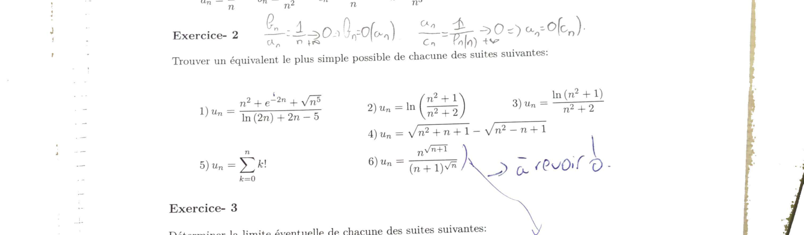
1) \(u_n=\dfrac{n^2+e^{-2n}+\sqrt{n^5}}{\ln(2n)+2n-5}\)
Étape 1 : numérateur
\(e^{-2n} \to 0\) et \(\sqrt{n^5} = n^{5/2}\) l'emporte sur \(n^2\) (car \(5/2 > 2\)). Le numérateur est équivalent à \(n^{5/2}\).
Étape 2 : dénominateur
\(2n\) l'emporte sur \(\ln(2n)\) et sur \(-5\). Le dénominateur est équivalent à \(2n\).
2) \(u_n=\ln\!\Big(\dfrac{n^2+1}{n^2+2}\Big)\)
Étape 1 : faire apparaître \(\ln(1 + v)\)
\[ \frac{n^2 + 1}{n^2 + 2} = 1 - \frac{1}{n^2 + 2} \qquad\Longrightarrow\qquad u_n = \ln\left(1 - \frac{1}{n^2 + 2}\right) \]Étape 2 : on applique
Ici \(v = -\dfrac{1}{n^2 + 2} \to 0\).
3) \(u_n=\dfrac{\ln(n^2+1)}{n^2+2}\)
Au numérateur : \(\ln(n^2 + 1) \sim \ln(n^2) = 2\ln n\). Au dénominateur : \(n^2 + 2 \sim n^2\).
4) \(u_n=\sqrt{n^2+n+1}-\sqrt{n^2-n+1}\)
Étape 1 : quantité conjuguée
On évite de soustraire deux équivalents (qui valent tous les deux \(n\)) :
\[ u_n = \frac{(n^2 + n + 1) - (n^2 - n + 1)}{\sqrt{n^2 + n + 1} + \sqrt{n^2 - n + 1}} = \frac{2n}{\sqrt{n^2 + n + 1} + \sqrt{n^2 - n + 1}} \]Étape 2 : équivalent
Chaque racine est équivalente à \(n\), donc le dénominateur à \(2n\).
5) \(u_n=\displaystyle\sum_{k=0}^n k!\)
Le dernier terme écrase les précédents : \(\dfrac{(n-1)!}{n!} = \dfrac1n \to 0\), donc \(\displaystyle\sum_{k=0}^{n-1} k! = o(n!)\) (chaque terme précédent est encore plus petit que \((n-1)!\)).
6) \(u_n=\dfrac{n^{\sqrt{n+1}}}{(n+1)^{\sqrt n}}\) (marqué « à revoir » par l'énoncé)
Étape 1 : passer au logarithme
\[ \ln u_n = \sqrt{n+1}\,\ln n - \sqrt n\,\ln(n+1) \]Étape 2 : développer
\[ \sqrt{n+1} = \sqrt n\left(1 + \frac{1}{2n} + o\Big(\frac1n\Big)\right) \qquad \ln(n+1) = \ln n + \frac1n + o\Big(\frac1n\Big) \] \[ \ln u_n = \left(\sqrt n + \frac{1}{2\sqrt n}\right)\ln n - \sqrt n\left(\ln n + \frac1n\right) + o\Big(\frac{1}{\sqrt n}\Big) \] \[ \ln u_n = \frac{\ln n}{2\sqrt n} - \frac{1}{\sqrt n} + o\Big(\frac{1}{\sqrt n}\Big) \]Étape 3 : limite
\(\ln n = o(\sqrt n)\), donc \(\ln u_n \to 0\), c'est-à-dire \(u_n \to 1\).
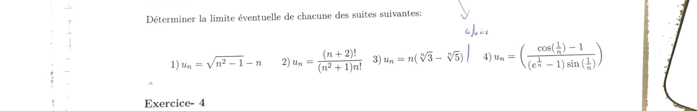
1) \(u_n=\sqrt{n^2-1}-n\)
2) \(u_n=\dfrac{(n+2)!}{(n^2+1)\,n!}\)
\((n+2)! = (n+2)(n+1)\,n!\), donc :
\[ u_n = \frac{(n+1)(n+2)}{n^2 + 1} = \frac{n^2 + 3n + 2}{n^2 + 1} \]3) \(u_n=n\big(\sqrt[n]3-\sqrt[n]5\big)\)
4) \(u_n=\dfrac{\cos(1/n)-1}{\big(e^{1/n}-1\big)\sin(1/n)}\)
On pose \(h = 1/n \to 0\).
Le dénominateur est équivalent à \(h\times h = h^2\) :
\[ u_n \sim \frac{-h^2/2}{h^2} = -\frac12 \]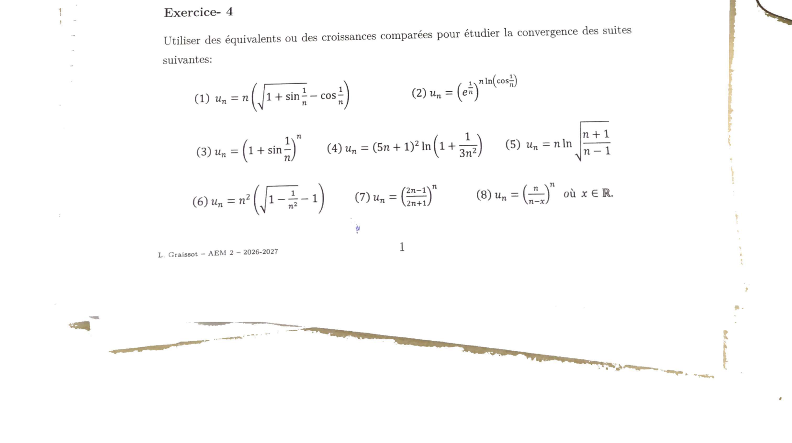
(1) \(u_n=n\Big(\sqrt{1+\sin\tfrac1n}-\cos\tfrac1n\Big)\)
On pose \(h = 1/n\), donc \(nh = 1\).
Étape 1 : DL de \(\sqrt{1 + \sin h}\)
\(\sin h = h + o(h^2)\), puis :
\[ \sqrt{1 + \sin h} = 1 + \frac{h}{2} - \frac{h^2}{8} + o(h^2) \]Étape 2 : DL de \(\cos h\)
\[ \cos h = 1 - \frac{h^2}{2} + o(h^2) \]Étape 3 : différence et multiplication par \(n\)
\[ \sqrt{1 + \sin h} - \cos h = \frac h2 + \frac{3h^2}{8} + o(h^2) \] \[ u_n = n\left(\frac h2 + \frac{3h^2}{8} + o(h^2)\right) = \frac12 + \frac{3h}{8} + o(h) \](2) \(u_n=\big(e^{1/n}\big)^{\,n\ln(\cos(1/n))}\)
On simplifie l'exposant :
\[ u_n = \exp\left(\frac1n\times n\ln\Big(\cos\frac1n\Big)\right) = \exp\left(\ln\Big(\cos\frac1n\Big)\right) = \cos\frac1n \](3) \(u_n=\Big(1+\sin\tfrac1n\Big)^n\)
\(\ln u_n = n\ln\left(1 + \sin\tfrac1n\right)\). Avec \(h = 1/n\) :
\[ \ln(1 + \sin h) = \sin h - \frac{\sin^2 h}{2} + o(h^2) = h - \frac{h^2}{2} + o(h^2) \] \[ n\ln(1 + \sin h) = \frac1h\left(h - \frac{h^2}{2}\right) + o(h) = 1 - \frac h2 + o(h) \to 1 \](4) \(u_n=(5n+1)^2\ln\Big(1+\dfrac1{3n^2}\Big)\)
\((5n + 1)^2 \sim 25n^2\) et \(\ln\left(1 + \dfrac{1}{3n^2}\right) \sim \dfrac{1}{3n^2}\). Par produit d'équivalents :
\[ u_n \sim 25n^2\times\frac{1}{3n^2} = \frac{25}{3} \](5) \(u_n=n\ln\sqrt{\dfrac{n+1}{n-1}}\)
Étape 1 : réécriture
\[ u_n = \frac n2\ln\left(1 + \frac{2}{n-1}\right) \]Étape 2 : équivalent
\(\dfrac{2}{n-1} \to 0\), donc \(\ln\left(1 + \dfrac{2}{n-1}\right) \sim \dfrac{2}{n-1} \sim \dfrac2n\).
(6) \(u_n=n^2\Big(\sqrt{1-\tfrac1{n^2}}-1\Big)\)
\[ \sqrt{1 - \frac{1}{n^2}} = 1 - \frac{1}{2n^2} + o\Big(\frac{1}{n^2}\Big) \] \[ u_n = n^2\left(-\frac{1}{2n^2} + o\Big(\frac{1}{n^2}\Big)\right) = -\frac12 + o(1) \](7) \(u_n=\Big(\dfrac{2n-1}{2n+1}\Big)^n\)
\(\ln u_n = n\ln\left(1 - \dfrac{2}{2n+1}\right) \sim n\times\left(-\dfrac{2}{2n+1}\right) \sim -1\).
(8) \(u_n=\Big(\dfrac n{n-x}\Big)^n\), \(x\in\mathbb R\) fixé
\(\ln u_n = -n\ln\left(1 - \dfrac xn\right)\). Avec \(\ln(1 + v) = v - \dfrac{v^2}{2} + o(v^2)\) :
\[ \ln u_n = -n\left(-\frac xn - \frac{x^2}{2n^2} + o\Big(\frac{1}{n^2}\Big)\right) = x + \frac{x^2}{2n} + o\Big(\frac1n\Big) \to x \]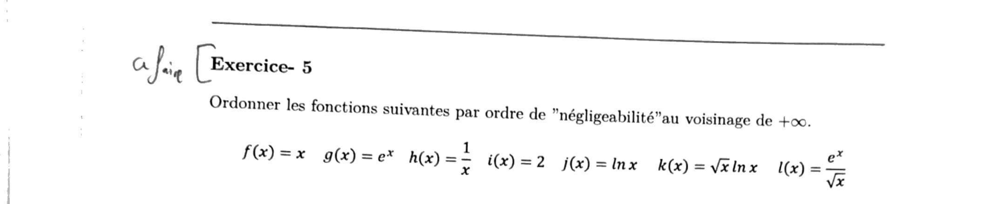
Classement en \(+\infty\)
Étape 1 : les comparaisons
- \(h(x) \to 0\) alors que \(i = 2\) : \(h \ll i\).
- \(\ln x \to +\infty\) : \(i \ll j\).
- \(\dfrac kj = \sqrt x \to \infty\) : \(j \ll k\).
- \(\dfrac fk = \dfrac{\sqrt x}{\ln x} \to \infty\) : \(k \ll f\).
- \(\dfrac lf = \dfrac{e^x}{x\sqrt x} \to \infty\) (croissance comparée) : \(f \ll l\).
- \(\dfrac gl = \sqrt x \to \infty\) : \(l \ll g\).
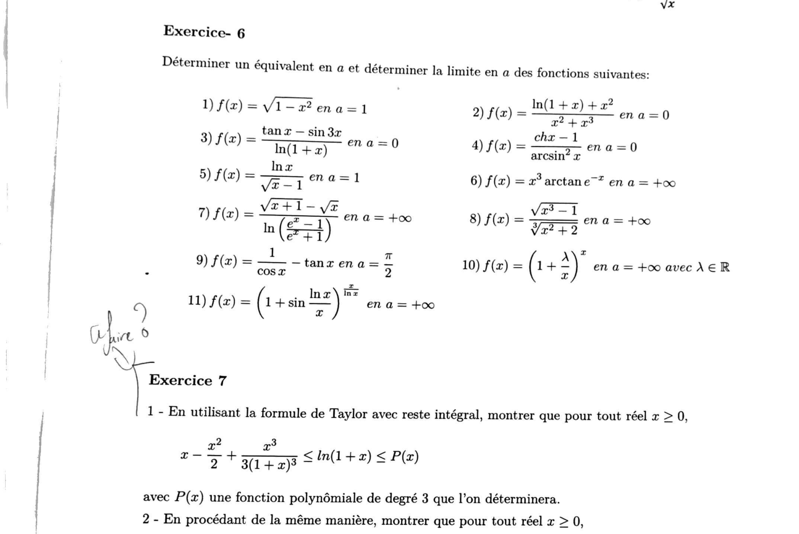
1) \(f(x)=\sqrt{1-x^2}\) en \(a=1\)
\(1 - x^2 = (1 - x)(1 + x)\) et \(1 + x \to 2\) :
\[ f(x) = \sqrt{(1 - x)(1 + x)} \sim \sqrt2\,\sqrt{1 - x} \]2) \(f(x)=\dfrac{\ln(1+x)+x^2}{x^2+x^3}\) en \(a=0\)
Numérateur : \(x - \dfrac{x^2}{2} + x^2 + o(x^2) = x + \dfrac{x^2}{2} + o(x^2) \sim x\). Dénominateur : \(x^2(1 + x) \sim x^2\).
3) \(f(x)=\dfrac{\tan x-\sin3x}{\ln(1+x)}\) en \(a=0\)
\(\tan x = x + o(x)\) et \(\sin 3x = 3x + o(x)\) : numérateur \(= -2x + o(x)\). Dénominateur \(\sim x\).
4) \(f(x)=\dfrac{\operatorname{ch}x-1}{\arcsin^2x}\) en \(a=0\)
\(\operatorname{ch}x - 1 \sim \dfrac{x^2}{2}\) et \(\arcsin x \sim x\), donc \(\arcsin^2 x \sim x^2\).
5) \(f(x)=\dfrac{\ln x}{\sqrt x-1}\) en \(a=1\)
On pose \(x = 1 + h\), \(h \to 0\) : \(\ln(1 + h) \sim h\) et \(\sqrt{1 + h} - 1 \sim \dfrac h2\).
6) \(f(x)=x^3\arctan\big(e^{-x}\big)\) en \(a=+\infty\)
\(e^{-x} \to 0\), donc \(\arctan(e^{-x}) \sim e^{-x}\).
7) \(f(x)=\dfrac{\sqrt{x+1}-\sqrt x}{\ln\Big(\dfrac{e^x-1}{e^x+1}\Big)}\) en \(a=+\infty\)
Étape 1 : numérateur
\[ \sqrt{x+1} - \sqrt x = \frac{1}{\sqrt{x+1} + \sqrt x} \sim \frac{1}{2\sqrt x} \]Étape 2 : dénominateur
\[ \frac{e^x - 1}{e^x + 1} = 1 - \frac{2}{e^x + 1} \sim 1 - 2e^{-x} \qquad\Longrightarrow\qquad \ln\left(1 - 2e^{-x}\right) \sim -2e^{-x} \]8) \(f(x)=\dfrac{\sqrt{x^3-1}}{\sqrt[3]{x^2+2}}\) en \(a=+\infty\)
Numérateur \(\sim x^{3/2}\), dénominateur \(\sim x^{2/3}\).
9) \(f(x)=\dfrac1{\cos x}-\tan x\) en \(a=\dfrac\pi2\)
Étape 1 : un seul quotient
\[ f(x) = \frac{1 - \sin x}{\cos x} \]Étape 2 : changement de variable
On pose \(x = \dfrac\pi2 - h\), \(h \to 0\) : \(\cos x = \sin h\) et \(\sin x = \cos h\).
\[ f(x) = \frac{1 - \cos h}{\sin h} \sim \frac{h^2/2}{h} = \frac h2 \]10) \(f(x)=\Big(1+\dfrac\lambda x\Big)^x\) en \(a=+\infty\), \(\lambda\in\mathbb R\)
\[ \ln f(x) = x\ln\left(1 + \frac\lambda x\right) = x\left(\frac\lambda x - \frac{\lambda^2}{2x^2} + o\Big(\frac{1}{x^2}\Big)\right) = \lambda - \frac{\lambda^2}{2x} + o\Big(\frac1x\Big) \to \lambda \]11) \(f(x)=\Big(1+\sin\dfrac{\ln x}x\Big)^{x/\ln x}\) en \(a=+\infty\) (marqué « à faire ? »)
Étape 1 : variable
On pose \(t = \dfrac{\ln x}{x} \to 0^+\), et l'exposant vaut \(1/t\).
Étape 2 : DL de l'exposant
\[ \ln(1 + \sin t) = t - \frac{t^2}{2} + o(t^2) \qquad\Longrightarrow\qquad \ln f = \frac1t\left(t - \frac{t^2}{2}\right) + o(t) = 1 - \frac t2 + o(t) \]Donc \(\ln f(x) \to 1\) (on a même \(\dfrac{x}{2\ln x}\,t^2 = \dfrac{\ln x}{2x} \to 0\)).
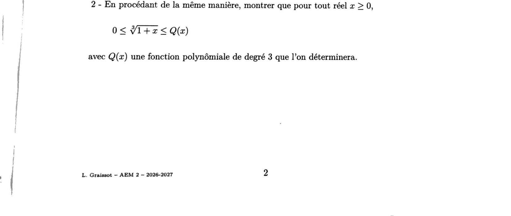
1) Encadrement de \(\ln(1+x)\)
Étape 1 : formule de Taylor avec reste intégral
Pour \(f(t) = \ln(1 + t)\) : \(f' = \dfrac{1}{1+t}\), \(f'' = -\dfrac{1}{(1+t)^2}\), \(f''' = \dfrac{2}{(1+t)^3}\).
\[ \ln(1 + x) = x - \frac{x^2}{2} + \int_0^x \frac{(x - t)^2}{(1 + t)^3}\,dt \]Étape 2 : encadrer le reste (pour \(x \ge 0\))
Pour \(t \in [0, x]\) : \(1 \le 1 + t \le 1 + x\), donc \(\dfrac{1}{(1+x)^3} \le \dfrac{1}{(1+t)^3} \le 1\). On multiplie par \((x - t)^2 \ge 0\) et on intègre (bornes croissantes) :
\[ \frac{1}{(1+x)^3}\int_0^x (x - t)^2\,dt \le \int_0^x \frac{(x - t)^2}{(1 + t)^3}\,dt \le \int_0^x (x - t)^2\,dt \]Or \(\displaystyle\int_0^x (x - t)^2\,dt = \left[-\frac{(x - t)^3}{3}\right]_0^x = \frac{x^3}{3}\).
2) Encadrement de \(\sqrt[3]{1+x}\)
Étape 1 : dérivées de \(g(t) = (1 + t)^{1/3}\)
- \(g(0) = 1\) ;
- \(g'(t) = \frac13(1 + t)^{-2/3}\), donc \(g'(0) = \frac13\) ;
- \(g''(t) = -\frac29(1 + t)^{-5/3}\), donc \(g''(0) = -\frac29\) ;
- \(g'''(t) = \frac{10}{27}(1 + t)^{-8/3}\).
Étape 2 : Taylor à l'ordre 2
\[ g(x) = 1 + \frac x3 - \frac{x^2}{9} + \frac{5}{27}\int_0^x \frac{(x - t)^2}{(1 + t)^{8/3}}\,dt \]Étape 3 : majorer le reste (pour \(x \ge 0\))
\((1 + t)^{8/3} \ge 1\), donc l'intégrande est majorée par \((x - t)^2\) et le reste par \(\dfrac{5}{27}\times\dfrac{x^3}{3} = \dfrac{5x^3}{81}\).
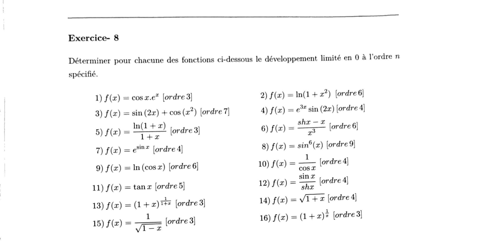
1) \(f(x)=\cos x\cdot e^x\) [ordre 3]
\(\cos x = 1 - \dfrac{x^2}{2} + o(x^3)\) et \(e^x = 1 + x + \dfrac{x^2}{2} + \dfrac{x^3}{6} + o(x^3)\). Produit tronqué à l'ordre 3 :
\[ \left(1 + x + \frac{x^2}{2} + \frac{x^3}{6}\right) - \frac{x^2}{2}(1 + x) = 1 + x + \frac{x^2}{2} + \frac{x^3}{6} - \frac{x^2}{2} - \frac{x^3}{2} \]2) \(f(x)=\ln(1+x^2)\) [ordre 6]
On remplace \(x\) par \(u = x^2\) dans \(\ln(1 + u) = u - \dfrac{u^2}{2} + \dfrac{u^3}{3} + o(u^3)\).
3) \(f(x)=\sin(2x)+\cos(x^2)\) [ordre 7]
Étape 1 : \(\sin 2x\)
\[ \sin(2x) = 2x - \frac{(2x)^3}{6} + \frac{(2x)^5}{120} - \frac{(2x)^7}{5040} + o(x^7) = 2x - \frac{4x^3}{3} + \frac{4x^5}{15} - \frac{8x^7}{315} + o(x^7) \]Étape 2 : \(\cos(x^2)\)
\(\cos(x^2) = 1 - \dfrac{x^4}{2} + o(x^7)\) : le terme suivant est en \(x^8\).
4) \(f(x)=e^{3x}\sin(2x)\) [ordre 4]
\(e^{3x} = 1 + 3x + \dfrac{9x^2}{2} + \dfrac{9x^3}{2} + \dfrac{27x^4}{8}\) et \(\sin 2x = 2x - \dfrac{4x^3}{3} + o(x^4)\). On multiplie degré par degré :
- \(x\) : \(2\) ;
- \(x^2\) : \(3\times2 = 6\) ;
- \(x^3\) : \(\dfrac92\times2 - \dfrac43 = 9 - \dfrac43 = \dfrac{23}{3}\) ;
- \(x^4\) : \(\dfrac92\times2 + 3\times\left(-\dfrac43\right) = 9 - 4 = 5\).
5) \(f(x)=\dfrac{\ln(1+x)}{1+x}\) [ordre 3]
\(\ln(1 + x) = x - \dfrac{x^2}{2} + \dfrac{x^3}{3}\) et \(\dfrac{1}{1 + x} = 1 - x + x^2 - x^3\). Produit :
- \(x\) : \(1\) ;
- \(x^2\) : \(-1 - \dfrac12 = -\dfrac32\) ;
- \(x^3\) : \(1 + \dfrac12 + \dfrac13 = \dfrac{11}{6}\).
6) \(f(x)=\dfrac{\operatorname{sh}x-x}{x^3}\) [ordre 6]
On développe \(\operatorname{sh} x\) jusqu'à \(x^9\) pour obtenir l'ordre 6 après division par \(x^3\) :
\[ \operatorname{sh}x - x = \frac{x^3}{6} + \frac{x^5}{120} + \frac{x^7}{5040} + \frac{x^9}{362\,880} + o(x^9) \]7) \(f(x)=e^{\sin x}\) [ordre 4]
On pose \(u = \sin x = x - \dfrac{x^3}{6} + o(x^4)\). Alors \(u^2 = x^2 - \dfrac{x^4}{3}\), \(u^3 = x^3\), \(u^4 = x^4\) (à l'ordre 4).
\[ e^u = 1 + u + \frac{u^2}{2} + \frac{u^3}{6} + \frac{u^4}{24} = 1 + x - \frac{x^3}{6} + \frac{x^2}{2} - \frac{x^4}{6} + \frac{x^3}{6} + \frac{x^4}{24} \]Les termes en \(x^3\) s'annulent ; en \(x^4\) : \(-\dfrac16 + \dfrac1{24} = -\dfrac18\).
8) \(f(x)=\sin^6x\) [ordre 9]
\(\sin x\) est impaire, donc \(\sin^6 x\) est paire : pas de terme en \(x^7\) ni \(x^9\).
\[ \sin x = x\left(1 - \frac{x^2}{6} + o(x^2)\right) \qquad \sin^6 x = x^6\left(1 - \frac{x^2}{6} + o(x^2)\right)^6 = x^6\left(1 - x^2 + o(x^2)\right) \](binôme à l'ordre 1 : \((1 + u)^6 \approx 1 + 6u\) avec \(u = -x^2/6\)).
9) \(f(x)=\ln(\cos x)\) [ordre 6]
Étape 1 : poser \(u\)
\[ u = \cos x - 1 = -\frac{x^2}{2} + \frac{x^4}{24} - \frac{x^6}{720} + o(x^6) \]Étape 2 : puissances de \(u\)
\[ u^2 = \frac{x^4}{4} - \frac{x^6}{24} + o(x^6) \qquad u^3 = -\frac{x^6}{8} + o(x^6) \]Étape 3 : \(\ln(1 + u) = u - \frac{u^2}{2} + \frac{u^3}{3}\)
- \(x^2\) : \(-\dfrac12\) ;
- \(x^4\) : \(\dfrac{1}{24} - \dfrac18 = -\dfrac{1}{12}\) ;
- \(x^6\) : \(-\dfrac{1}{720} + \dfrac{1}{48} - \dfrac{1}{24} = \dfrac{-1 + 15 - 30}{720} = -\dfrac{1}{45}\).
10) \(f(x)=\dfrac1{\cos x}\) [ordre 4]
On écrit \(\cos x = 1 - v\) avec \(v = \dfrac{x^2}{2} - \dfrac{x^4}{24}\), et \(\dfrac{1}{1 - v} = 1 + v + v^2 + o(v^2)\) avec \(v^2 = \dfrac{x^4}{4}\) :
\[ 1 + \frac{x^2}{2} - \frac{x^4}{24} + \frac{x^4}{4} = 1 + \frac{x^2}{2} + \frac{5x^4}{24} \]11) \(f(x)=\tan x\) [ordre 5]
\(\tan x = \sin x\times\dfrac{1}{\cos x}\), avec \(\sin x = x - \dfrac{x^3}{6} + \dfrac{x^5}{120}\) et le DL de la question 10. Produit tronqué à l'ordre 5 :
- \(x\) : \(1\) ;
- \(x^3\) : \(\dfrac12 - \dfrac16 = \dfrac13\) ;
- \(x^5\) : \(\dfrac{5}{24} - \dfrac{1}{12} + \dfrac{1}{120} = \dfrac{25 - 10 + 1}{120} = \dfrac{2}{15}\).
12) \(f(x)=\dfrac{\sin x}{\operatorname{sh}x}\) [ordre 4]
On factorise \(x\) : \(\dfrac{1 - x^2/6}{1 + x^2/6} + o(x^4)\). Avec \(\dfrac{1}{1 + w} = 1 - w + w^2\), \(w = \dfrac{x^2}{6}\) :
\[ \left(1 - \frac{x^2}{6}\right)\left(1 - \frac{x^2}{6} + \frac{x^4}{36}\right) = 1 - \frac{x^2}{3} + \frac{x^4}{36} + \frac{x^4}{36} \]13) \(f(x)=(1+x)^{\frac1{1+x}}\) [ordre 3]
Étape 1 : forme exponentielle
\[ f(x) = e^{w(x)} \qquad w(x) = \frac{\ln(1 + x)}{1 + x} = x - \frac32x^2 + \frac{11}{6}x^3 + o(x^3) \quad\text{(question 5)} \]Étape 2 : \(e^w\)
\(w^2 = x^2 - 3x^3 + o(x^3)\) et \(w^3 = x^3 + o(x^3)\) :
- \(x\) : \(1\) ;
- \(x^2\) : \(-\dfrac32 + \dfrac12 = -1\) ;
- \(x^3\) : \(\dfrac{11}{6} - \dfrac32 + \dfrac16 = \dfrac12\).
14) \(f(x)=\sqrt{1+x}\) [ordre 4]
Avec \(\alpha = \dfrac12\) : coefficients \(\dfrac12\), \(-\dfrac18\), \(\dfrac1{16}\), \(-\dfrac{5}{128}\).
15) \(f(x)=\dfrac1{\sqrt{1-x}}\) [ordre 3]
Binôme avec \(\alpha = -\dfrac12\) : \((1 + u)^{-1/2} = 1 - \dfrac u2 + \dfrac38u^2 - \dfrac{5}{16}u^3\). On pose \(u = -x\) : les signes des puissances impaires s'inversent.
16) \(f(x)=(1+x)^{1/x}\) [ordre 3]
Étape 1 : le logarithme
\[ \ln f(x) = \frac{\ln(1 + x)}{x} = 1 - \frac x2 + \frac{x^2}{3} - \frac{x^3}{4} + o(x^3) = 1 + w \qquad w = -\frac x2 + \frac{x^2}{3} - \frac{x^3}{4} \]Étape 2 : exponentielle
\(f = e\times e^{w}\), avec \(w^2 = \dfrac{x^2}{4} - \dfrac{x^3}{3}\) et \(w^3 = -\dfrac{x^3}{8}\) :
- \(x\) : \(-\dfrac12\) ;
- \(x^2\) : \(\dfrac13 + \dfrac18 = \dfrac{11}{24}\) ;
- \(x^3\) : \(-\dfrac14 - \dfrac16 - \dfrac{1}{48} = -\dfrac{7}{16}\).
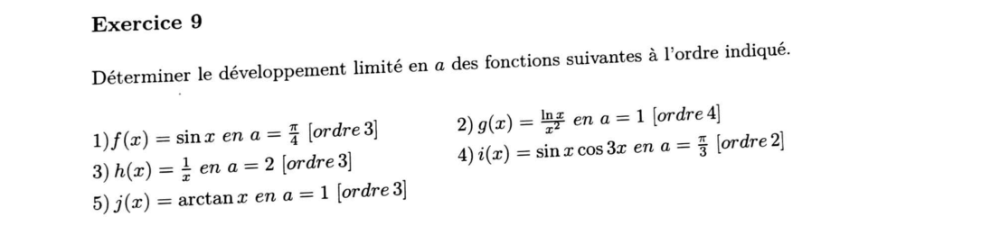
1) \(f(x)=\sin x\) en \(a=\frac\pi4\) [ordre 3]
Étape 1 : formule d'addition
\[ \sin\left(\frac\pi4 + h\right) = \sin\frac\pi4\cos h + \cos\frac\pi4\sin h = \frac{\sqrt2}{2}(\cos h + \sin h) \]Étape 2 : DL de \(\cos h\) et \(\sin h\)
\(\cos h = 1 - \dfrac{h^2}{2}\), \(\sin h = h - \dfrac{h^3}{6}\) (à l'ordre 3).
2) \(g(x)=\dfrac{\ln x}{x^2}\) en \(a=1\) [ordre 4]
On pose \(x = 1 + h\) :
\[ \ln(1 + h) = h - \frac{h^2}{2} + \frac{h^3}{3} - \frac{h^4}{4} \qquad (1 + h)^{-2} = 1 - 2h + 3h^2 - 4h^3 + 5h^4 \]Produit, coefficient par coefficient :
- \(h\) : \(1\) ;
- \(h^2\) : \(-2 - \dfrac12 = -\dfrac52\) ;
- \(h^3\) : \(3 + 1 + \dfrac13 = \dfrac{13}{3}\) ;
- \(h^4\) : \(-4 - \dfrac32 - \dfrac23 - \dfrac14 = -\dfrac{77}{12}\).
3) \(h(x)=\dfrac1x\) en \(a=2\) [ordre 3]
On pose \(t = x - 2\) et on factorise : \(\dfrac{1}{2 + t} = \dfrac12\times\dfrac{1}{1 + t/2}\).
\[ \frac12\left(1 - \frac t2 + \frac{t^2}{4} - \frac{t^3}{8}\right) + o(t^3) \]4) \(i(x)=\sin x\cos3x\) en \(a=\frac\pi3\) [ordre 2]
Étape 1 : \(\sin x\)
\[ \sin\left(\frac\pi3 + h\right) = \frac{\sqrt3}{2}\cos h + \frac12\sin h = \frac{\sqrt3}{2} + \frac h2 - \frac{\sqrt3}{4}h^2 + o(h^2) \]Étape 2 : \(\cos 3x\)
\[ \cos(3x) = \cos(\pi + 3h) = -\cos 3h = -1 + \frac92h^2 + o(h^2) \]Étape 3 : produit
\[ \left(\frac{\sqrt3}{2} + \frac h2 - \frac{\sqrt3}{4}h^2\right)\left(-1 + \frac92h^2\right) = -\frac{\sqrt3}{2} - \frac h2 + \left(\frac{\sqrt3}{4} + \frac{9\sqrt3}{4}\right)h^2 \]5) \(j(x)=\arctan x\) en \(a=1\) [ordre 3] — par Taylor-Young
Étape 1 : dérivées
\[ f' = \frac{1}{1 + x^2} \qquad f'' = \frac{-2x}{(1 + x^2)^2} \qquad f''' = \frac{6x^2 - 2}{(1 + x^2)^3} \]Étape 2 : valeurs en 1
\(f(1) = \dfrac\pi4\), \(f'(1) = \dfrac12\), \(f''(1) = -\dfrac12\), \(f'''(1) = \dfrac48 = \dfrac12\).
Étape 3 : Taylor-Young
\[ \frac\pi4 + \frac12h - \frac{1/2}{2!}h^2 + \frac{1/2}{3!}h^3 \]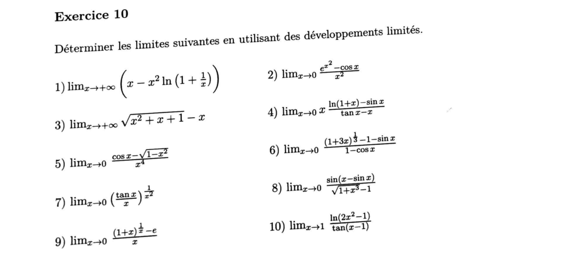
1) \(\displaystyle\lim_{x\to+\infty}\Big(x-x^2\ln\big(1+\tfrac1x\big)\Big)\)
On pose \(u = 1/x\) et \(\ln(1 + u) = u - \dfrac{u^2}{2} + \dfrac{u^3}{3} + o(u^3)\) :
\[ x^2\ln\left(1 + \frac1x\right) = \frac{1}{u^2}\left(u - \frac{u^2}{2} + \frac{u^3}{3} + o(u^3)\right) = x - \frac12 + \frac{1}{3x} + o\Big(\frac1x\Big) \]L'expression vaut \(\dfrac12 - \dfrac{1}{3x} + o\left(\dfrac1x\right)\).
2) \(\displaystyle\lim_{x\to0}\dfrac{e^{x^2}-\cos x}{x^2}\)
\(e^{x^2} = 1 + x^2 + o(x^2)\) et \(\cos x = 1 - \dfrac{x^2}{2} + o(x^2)\) : numérateur \(= \dfrac32x^2 + o(x^2)\).
3) \(\displaystyle\lim_{x\to+\infty}\sqrt{x^2+x+1}-x\)
\(\sqrt{x^2 + x + 1} = x\sqrt{1 + v}\) avec \(v = \dfrac1x + \dfrac{1}{x^2} \to 0\).
\[ \sqrt{1 + v} = 1 + \frac v2 + O(v^2) \qquad x\sqrt{1 + v} = x + \frac12 + \frac{1}{2x} + O\Big(\frac1x\Big) = x + \frac12 + o(1) \]4) \(\displaystyle\lim_{x\to0}x\,\dfrac{\ln(1+x)-\sin x}{\tan x-x}\)
Étape 1 : numérateur
\[ \ln(1 + x) - \sin x = \left(x - \frac{x^2}{2} + \frac{x^3}{3}\right) - \left(x - \frac{x^3}{6}\right) + o(x^3) = -\frac{x^2}{2} + \frac{x^3}{2} + o(x^3) \sim -\frac{x^2}{2} \]Étape 2 : dénominateur
\(\tan x - x = \dfrac{x^3}{3} + o(x^3) \sim \dfrac{x^3}{3}\).
5) \(\displaystyle\lim_{x\to0}\dfrac{\cos x-\sqrt{1-x^2}}{x^4}\)
\(\cos x = 1 - \dfrac{x^2}{2} + \dfrac{x^4}{24}\) et \(\sqrt{1 - x^2} = 1 - \dfrac{x^2}{2} - \dfrac{x^4}{8}\) (à l'ordre 4). La différence vaut \(\left(\dfrac{1}{24} + \dfrac18\right)x^4 = \dfrac{x^4}{6}\).
6) \(\displaystyle\lim_{x\to0}\dfrac{(1+3x)^{1/3}-1-\sin x}{1-\cos x}\)
Binôme avec \(\alpha = \dfrac13\) : \(\dfrac{\frac13\left(-\frac23\right)}{2} = -\dfrac19\), donc :
\[ (1 + 3x)^{1/3} = 1 + x - \frac19(3x)^2 + o(x^2) = 1 + x - x^2 + o(x^2) \]Avec \(\sin x = x + o(x^2)\), le numérateur vaut \(-x^2 + o(x^2)\). Le dénominateur : \(1 - \cos x \sim \dfrac{x^2}{2}\).
7) \(\displaystyle\lim_{x\to0}\Big(\dfrac{\tan x}x\Big)^{1/x^2}\)
\(\dfrac{\tan x}{x} = 1 + \dfrac{x^2}{3} + o(x^2)\). On passe au logarithme :
\[ \frac{1}{x^2}\ln\left(1 + \frac{x^2}{3} + o(x^2)\right) = \frac{1}{x^2}\left(\frac{x^2}{3} + o(x^2)\right) \to \frac13 \]8) \(\displaystyle\lim_{x\to0}\dfrac{\sin(x-\sin x)}{\sqrt{1+x^3}-1}\)
\(x - \sin x = \dfrac{x^3}{6} + o(x^3) \to 0\), donc \(\sin(x - \sin x) \sim x - \sin x \sim \dfrac{x^3}{6}\). Et \(\sqrt{1 + x^3} - 1 \sim \dfrac{x^3}{2}\).
9) \(\displaystyle\lim_{x\to0}\dfrac{(1+x)^{1/x}-e}{x}\)
\[ (1 + x)^{1/x} = \exp\left(\frac{\ln(1 + x)}{x}\right) = \exp\left(1 - \frac x2 + o(x)\right) = e\left(1 - \frac x2 + o(x)\right) \]Le numérateur vaut \(-\dfrac e2x + o(x)\).
10) \(\displaystyle\lim_{x\to1}\dfrac{\ln(2x^2-1)}{\tan(x-1)}\)
On pose \(h = x - 1\) : \(2x^2 - 1 = 1 + 4h + 2h^2\), donc \(\ln(2x^2 - 1) = 4h + o(h)\). Et \(\tan h \sim h\).
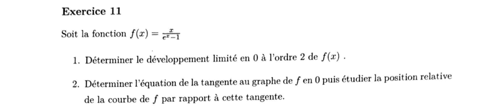
1) DL en 0 à l'ordre 2
Étape 1 : factoriser \(x\)
\(f\) n'est pas définie en 0. On écrit :
\[ e^x - 1 = x\left(1 + \frac x2 + \frac{x^2}{6} + o(x^2)\right) \qquad\Longrightarrow\qquad f(x) = \frac{1}{1 + u} \quad\text{avec } u = \frac x2 + \frac{x^2}{6} + o(x^2) \]Étape 2 : développer l'inverse
Avec \(u^2 = \dfrac{x^2}{4} + o(x^2)\) :
\[ f(x) = 1 - \frac x2 - \frac{x^2}{6} + \frac{x^2}{4} + o(x^2) \]2) Tangente et position
Le prolongement est dérivable en 0 avec \(f'(0) = -\dfrac12\) : tangente \(y = 1 - \dfrac x2\).
\[ f(x) - \left(1 - \frac x2\right) = \frac{x^2}{12} + o(x^2) \sim \frac{x^2}{12} > 0 \]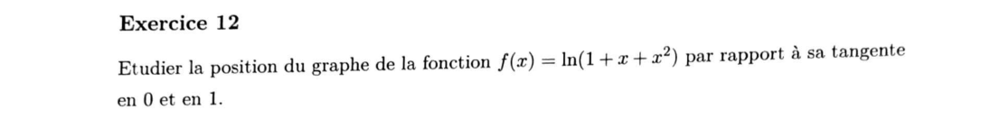
En \(x_0=0\)
\(1 + x + x^2 > 0\) pour tout réel (discriminant \(-3 < 0\)) : \(f\) est définie et \(C^\infty\) sur \(\mathbb R\).
Étape 1 : DL à l'ordre 3
On pose \(u = x + x^2\), avec \(u^2 = x^2 + 2x^3 + o(x^3)\) et \(u^3 = x^3 + o(x^3)\) :
\[ f(x) = u - \frac{u^2}{2} + \frac{u^3}{3} = x + x^2 - \frac{x^2}{2} - x^3 + \frac{x^3}{3} + o(x^3) = x + \frac{x^2}{2} - \frac23x^3 + o(x^3) \]Étape 2 : tangente et position
Tangente \(y = x\), et \(f(x) - x \sim \dfrac{x^2}{2} > 0\).
En \(x_0=1\) (Taylor-Young à l'ordre 2)
Étape 1 : dérivées
\[ f'(x) = \frac{1 + 2x}{1 + x + x^2} \qquad f''(x) = \frac{2(1 + x + x^2) - (1 + 2x)^2}{(1 + x + x^2)^2} \]En 1 : \(f(1) = \ln 3\), \(f'(1) = \dfrac33 = 1\), \(f''(1) = \dfrac{6 - 9}{9} = -\dfrac13\).
Étape 2 : Taylor-Young
\[ f(x) = \ln 3 + (x - 1) - \frac16(x - 1)^2 + o\big((x - 1)^2\big) \]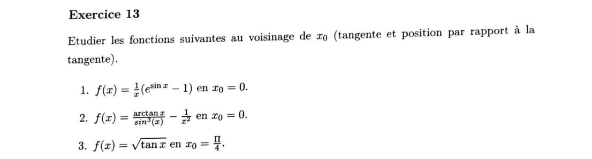
1) \(f(x)=\dfrac1x\big(e^{\sin x}-1\big)\) en \(x_0=0\)
Étape 1 : DL de \(e^{\sin x}\) à l'ordre 4
On reprend la question 7 de l'exercice 8 :
\[ e^{\sin x} = 1 + x + \frac{x^2}{2} + 0\cdot x^3 - \frac{x^4}{8} + o(x^4) \]Étape 2 : division par \(x\)
\[ f(x) = 1 + \frac x2 - \frac{x^3}{8} + o(x^3) \]Prolongement : \(f(0) = 1\), \(f'(0) = \dfrac12\), tangente \(y = 1 + \dfrac x2\).
Étape 3 : position
Le terme en \(x^2\) est nul, donc \(f(x) - \left(1 + \dfrac x2\right) \sim -\dfrac{x^3}{8}\), qui change de signe.
2) \(f(x)=\dfrac{\arctan x}{\sin^3x}-\dfrac1{x^2}\) en \(x_0=0\)
Étape 1 : écrire chaque morceau en \(x^k(1 + \dots)\)
Les termes sont singuliers (\(\sim x^{-2}\)) : on développe assez loin pour qu'ils se simplifient.
\[ \arctan x = x\left(1 - \frac{x^2}{3} + \frac{x^4}{5}\right) + o(x^5) \qquad \sin x = x(1 + w),\ w = -\frac{x^2}{6} + \frac{x^4}{120} \]Étape 2 : \(\sin^3 x\) puis son inverse
\[ (1 + w)^3 = 1 + 3w + 3w^2 = 1 - \frac{x^2}{2} + \frac{13}{120}x^4 \]Avec \(\dfrac{1}{1 + v} = 1 - v + v^2\), \(v = -\dfrac{x^2}{2} + \dfrac{13}{120}x^4\) :
\[ \frac{1}{(1 + w)^3} = 1 + \frac{x^2}{2} - \frac{13}{120}x^4 + \frac{x^4}{4} = 1 + \frac{x^2}{2} + \frac{17}{120}x^4 \]Étape 3 : le quotient
\[ \frac{\arctan x}{\sin^3 x} = \frac{1}{x^2}\left(1 - \frac{x^2}{3} + \frac{x^4}{5}\right)\left(1 + \frac{x^2}{2} + \frac{17}{120}x^4\right) = \frac{1}{x^2}\left(1 + \frac{x^2}{6} + \frac{7}{40}x^4 + o(x^4)\right) \](coefficient de \(x^2\) : \(\dfrac12 - \dfrac13 = \dfrac16\) ; de \(x^4\) : \(\dfrac{17}{120} - \dfrac16 + \dfrac15 = \dfrac{17 - 20 + 24}{120} = \dfrac{7}{40}\)). On retranche \(\dfrac{1}{x^2}\) :
3) \(f(x)=\sqrt{\tan x}\) en \(x_0=\frac\pi4\)
Étape 1 : \(\tan\) en \(\frac\pi4 + h\)
Avec \(\tan h = h + o(h^2)\) : \(\dfrac{1 + h}{1 - h} = (1 + h)(1 + h + h^2) = 1 + 2h + 2h^2 + o(h^2)\).
Étape 2 : racine
\(\sqrt{1 + t} = 1 + \dfrac t2 - \dfrac{t^2}{8}\) avec \(t = 2h + 2h^2\) et \(t^2 = 4h^2\) :
\[ f = 1 + h + h^2 - \frac{h^2}{2} + o(h^2) = 1 + h + \frac{h^2}{2} + o(h^2) \]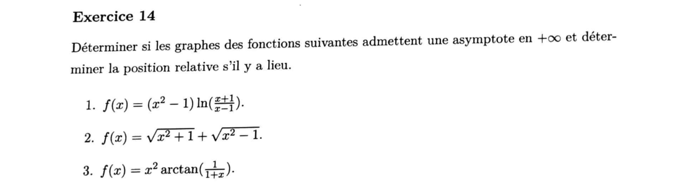
1) \(f(x)=(x^2-1)\ln\Big(\dfrac{x+1}{x-1}\Big)\) (\(x>1\))
Dans les trois cas, on pose \(u = \dfrac1x \to 0^+\).
Étape 1 : écrire en \(u\)
\[ \ln\frac{1 + u}{1 - u} = \ln(1 + u) - \ln(1 - u) = 2\left(u + \frac{u^3}{3} + \frac{u^5}{5}\right) + o(u^5) \qquad x^2 - 1 = \frac{1 - u^2}{u^2} \]Étape 2 : produit
\[ f = \frac{2(1 - u^2)}{u}\left(1 + \frac{u^2}{3} + \frac{u^4}{5}\right) = \frac2u\left(1 - \frac23u^2 - \frac{2}{15}u^4\right) = 2x - \frac{4}{3x} + o\Big(\frac1x\Big) \]2) \(f(x)=\sqrt{x^2+1}+\sqrt{x^2-1}\)
On factorise \(x\) : \(f = x\left(\sqrt{1 + u^2} + \sqrt{1 - u^2}\right)\). Avec \(t = u^2\) :
\[ \sqrt{1 + t} + \sqrt{1 - t} = \left(1 + \frac t2 - \frac{t^2}{8}\right) + \left(1 - \frac t2 - \frac{t^2}{8}\right) + o(t^2) = 2 - \frac{t^2}{4} + o(t^2) = 2 - \frac{u^4}{4} + o(u^4) \] \[ f = 2x - \frac{1}{4x^3} + o\Big(\frac{1}{x^3}\Big) \]3) \(f(x)=x^2\arctan\Big(\dfrac1{1+x}\Big)\)
Étape 1 : l'argument
\[ z = \frac{1}{1 + x} = \frac{u}{1 + u} = u - u^2 + u^3 + o(u^3) \qquad z^3 = u^3 + o(u^3) \]Étape 2 : arctan
\[ \arctan z = z - \frac{z^3}{3} + o(z^3) = u - u^2 + \frac23u^3 + o(u^3) \]Étape 3 : multiplier par \(x^2 = 1/u^2\)
\[ f = \frac1u - 1 + \frac23u + o(u) = x - 1 + \frac{2}{3x} + o\Big(\frac1x\Big) \]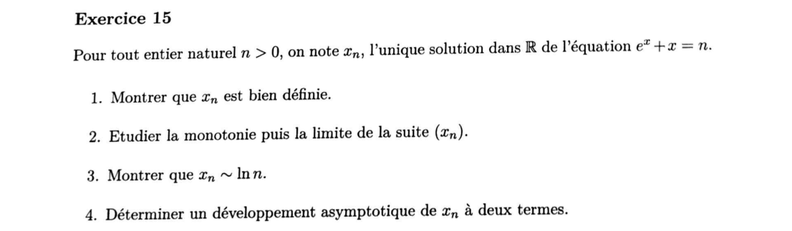
1) \(x_n\) est bien définie
\(\varphi(x) = e^x + x\) est continue et strictement croissante sur \(\mathbb R\) (somme de deux fonctions strictement croissantes), de limites \(-\infty\) en \(-\infty\) et \(+\infty\) en \(+\infty\).
2) Monotonie et limite
Étape 1 : monotonie
\(\varphi(x_{n+1}) = n + 1 > n = \varphi(x_n)\) et \(\varphi\) est strictement croissante : \(x_{n+1} > x_n\).
Étape 2 : limite
Si \((x_n)\) était majorée par \(M\), on aurait \(n = \varphi(x_n) \le \varphi(M)\) pour tout \(n\) : absurde. Une suite croissante non majorée tend vers \(+\infty\).
3) \(x_n\sim\ln n\)
Étape 1 : factoriser
\[ n = e^{x_n} + x_n = e^{x_n}\left(1 + x_ne^{-x_n}\right) \]\(x_ne^{-x_n} \to 0\) (croissances comparées, \(x_n \to +\infty\)), donc \(\dfrac{n}{e^{x_n}} \to 1\).
Étape 2 : logarithme du rapport
On passe au \(\ln\) du rapport (on ne passe jamais le \(\ln\) dans un équivalent) :
\[ \ln n - x_n = \ln\frac{n}{e^{x_n}} \to 0 \qquad\Longrightarrow\qquad x_n = \ln n + o(1) \]Comme \(\ln n \to +\infty\) : \(\dfrac{x_n}{\ln n} = 1 + \dfrac{o(1)}{\ln n} \to 1\).
4) Développement asymptotique à deux termes
Étape 1 : isoler \(x_n\)
\[ e^{x_n} = n - x_n \qquad\Longrightarrow\qquad x_n = \ln(n - x_n) = \ln n + \ln\left(1 - \frac{x_n}{n}\right) \]Étape 2 : équivalent du terme correctif
Comme \(x_n \sim \ln n\), \(\dfrac{x_n}{n} \sim \dfrac{\ln n}{n} \to 0\). Avec \(\ln(1 + v) \sim v\) pour \(v = -\dfrac{x_n}{n}\) :
\[ \ln\left(1 - \frac{x_n}{n}\right) \sim -\frac{x_n}{n} \sim -\frac{\ln n}{n} \]4. Compléments (feuilles d'exercices hors TD officiel)
Deux feuilles supplémentaires, trouvées en dehors du cours ECAM (pas les TD officiels de L. Graissot), à traiter en bonus sur le même chapitre. Elles sont cataloguées ici ; leur correction complète (celles qui n'ont pas encore de corrigé officiel réutilisé) est prévue pour une session ultérieure.
15 exercices sur les relations de comparaison et les DL, dont 8 disposent déjà d'un corrigé officiel exploitable : Ex1 (équivalents de \(\ln(1+\sin x)\), \(\arctan(1+x)-\pi/4\)), Ex3 (\(\ln\ln x=o(\ln x)\) et limite de \((\ln x/x)^{1/x}\)), Ex5 (3 calculs de limites par DL), Ex6 (primitiver un DL, tangente de \(\arctan(x+1)\)), Ex11 (DL de \(\tan\) à l'ordre 5 via \(\tan'=1+\tan^2\)), Ex12 (équation différentielle vérifiée par \(e^x\cos x\), DL à l'ordre 6), Ex13 (équivalents de suites, dont \(\binom np\)), Ex15 (DL et dérivabilité : contre-exemple à l'ordre 2). Les exercices 2, 4, 7, 8, 9, 10, 14 sont énoncés sans corrigé dans le document source.
24 exercices organisés en 6 parties : 1. Calculs (12 DL, dont \(\ln\big(\frac{x^2+1}{x+1}\big)\), \(\sin(\operatorname{Arctan}x)\), \((1+x)^{1/x}\)…), 2. Développements asymptotiques (Ex5-6), 3. Applications aux études de fonctions (Ex7-14 : passage au log, prolongements par continuité, branches infinies), 4. Développements implicites (Ex15-16 : réciproque de \(xe^{x^2}\), équation \(x^{-\lambda}e^{1/x}=1\)), 5. Entraînement (Ex17-18, ancien CCINP), 6. Exercices CCINP (Ex19-24, dont un DL à l'ordre 100 et une équation implicite \(xe^x=1/t\)). Ce document ne contient aucun corrigé (énoncés seuls) : à résoudre intégralement dans une session dédiée.
📂 Documents donnés
Fichiers originaux liés à ce chapitre. Cliquez pour ouvrir.
Scan complet du cours (L. Graissot)
TD1 — énoncé (Ex1 à Ex15 traités ici)
Extrait — tableau des DL usuels
Compléments hors-programme officiel
Cursus AM2 · Mathématiques · L. Graissot, 2026-2027. Voir aussi Ch2 — Applications linéaires (même scan, p.17 → 27).